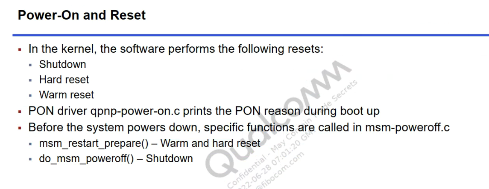

概述
高通qcm2290平台，目前有专门的开关机原因检测驱动，分析一下。
参考

根据上图得知：
关机时会调用
msm_restart_prepare和do_msm_poweroff接口控制pmic关机。开机时
qpnp-power-on.c驱动会打印开机原因。
代码分析
涉及代码：
drivers/power/reset/msm-poweroff.c
drivers/input/misc/qpnp-power-on.c
pm2250.dts:
qcom,power-on@800 {
compatible = "qcom,qpnp-power-on";
reg = <0x800 0x100>;
interrupts = <0x0 0x8 0x0 IRQ_TYPE_EDGE_BOTH>,
<0x0 0x8 0x1 IRQ_TYPE_EDGE_BOTH>;
interrupt-names = "kpdpwr", "resin";
qcom,pon-dbc-delay = <15625>;
qcom,kpdpwr-sw-debounce;
qcom,system-reset;
qcom,store-hard-reset-reason;
qcom,pon_1 {
qcom,pon-type = <PON_POWER_ON_TYPE_KPDPWR>;
qcom,pull-up = <1>;
linux,code = <KEY_POWER>;
qcom,support-reset = <1>;
qcom,s1-timer = <6720>;
qcom,s2-timer = <500>;
qcom,s2-type = <4>;
};
/*
qcom,pon_2 {
qcom,pon-type = <PON_POWER_ON_TYPE_RESIN>;
qcom,pull-up = <1>;
linux,code = <KEY_VOLUMEDOWN>;
};
*/
};
scuba.dtsi:
restart@440b000 {
compatible = "qcom,pshold";
reg = <0x440b000 0x4>,
<0x03d3000 0x4>;
reg-names = "pshold-base", "tcsr-boot-misc-detect";
};